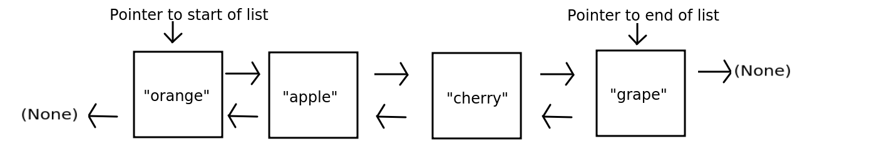
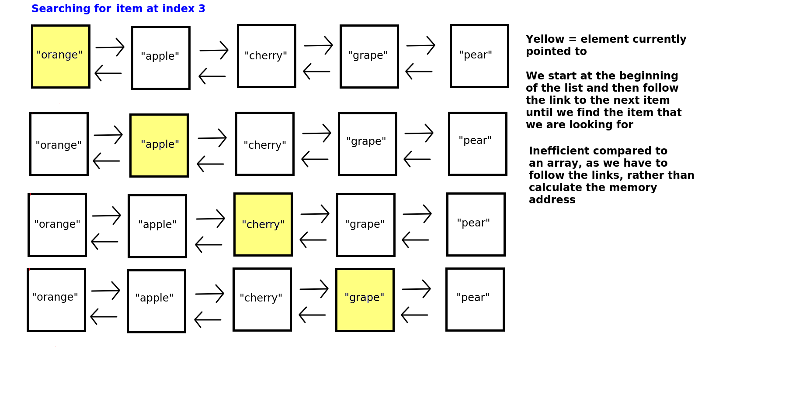
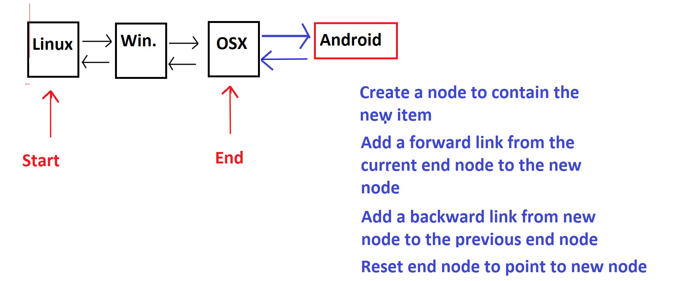
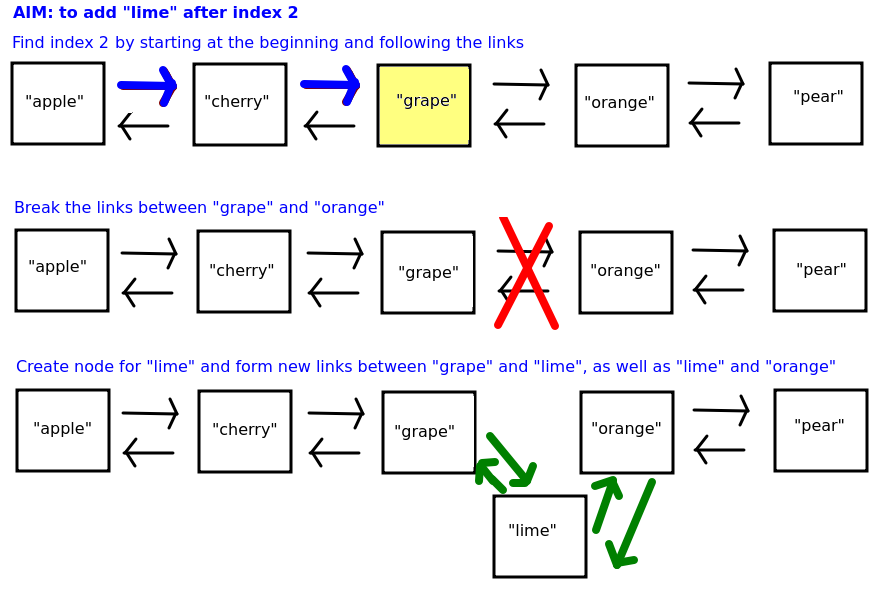

Linked Lists
Introduction
We will look at a further data structure, linked lists. Linked lists, which are different to the plain lists we discussed above, are unlike arrays in that they are not stored continuously in memory. Instead, data is stored as a series of linked nodes. Each node contains one item of data, and links to the memory locations of the previous and the next item of data in the linked list.

Each node has a link to the previous and the following node. When we add a new item of data, we make the previous node link to the new node, and we link the new node back to the previous node to form a two-way link.
The first node in the list links to nothing in the reverse direction (indicated in Python by the special value None) and similarly, the final node in the list links to nothing in the forward direction.
In addition, a linked list contains two variables pointing to the first node and the last node. This means that we can always access the start of the linked list and the end of the linked list very quickly and efficiently.
We will now think about the consequences of this.
Remember how we could use simple arithmetic, using the array index, to calculate the location in memory of a given element in an array. Can we do this here? We cannot. This is because, in a linked list, items are not stored continuously in memory. Instead, each node contains references to the memory locations of the previous and the following node. The diagram below shows how we have to search through the linked list by following the forward links until we find the index we need:
On the other hand, as long as we have a reference to both the start and the end of the linked list, it's efficient to add a new member to the end of the linked list. We can just create a new node and link it, both ways, to the end node. Contrast this to arrays, in which we had to create a new array with additional space and copy the elements over. We will explore this in more detail in the exercises this week.
You can see this below with a linked list containing operating systems:
Insertion into the middle of the list (not asked as a question in the exercise) has mixed efficiency. On the one hand we have to find the index we want to insert the element at (which as we saw above is inefficient), on the other hand the actual insertion process is easier as we can just break the existing links between the node BEFORE the element we want to insert and the node AFTER this element, and then link in the new element.
The diagram below shows the process of adding a new element by inserting it after another element. The operation would typically take, as parameters, the index we want to insert at (2 here, i.e. element CC) and the new data (DD here) to insert.

Implementing a linked list using classes
We'll now move on to implementing the linked list - in code. As you may remember, linked lists are a bit more complex than stacks so require a bit more effort to implement. In particular, we will now need two classes, not one. Put each class in its own file and import them into your main.py.
a
Nodeclass to represent an individual node. Each item of data is contained within a node, along with the links to the previous and next item.a
LinkedListclass to represent the linked list as a whole. Remember that this needs to contain references to the first and last nodes in the linked list.
Exercise: Create a Node class
- Create a new PyCharm project. Inside a new file, create a
Nodeclass. It should contain an__init__()method which looks like this:
def __init__(self, data):
self.data = data
self.prev = None
self.next = None
What does this do? Remember we use __init__() to initialise an object of the class. A node needs to contain data. So this __init__() method allows us to create a node, and pass the data to it. The data then gets attached to the current node we're working with, using self.data = data.
Note how we initialise the prev and next attributes to None. These attributes represent the previous and next node. None is a special data type indicating that nothing exists yet; it will be appropriate here as we haven't linked this node to any others yet.
Add a
__str__()method to Node which returns a string containing the value associated with the node.Create some test code in
main.pywhich creates two nodes,n1andn2, for example;
n1 = Node("Fred")
n2 = Node("Tom")
Note how we pass the data associated with each node ("Fred" and "Tom" here) when we create it. This will call our Node class's __init__() method, and set the variable data equal to whatever was passed in (Fred or Tom).
Now try printing
n1andn2to prove that the nodes have been created separately.
Exercise: Creating the linked list itself
We have now created our Node class. We are now going to use it in a complete LinkedList class which will allow you to add nodes to a linked list, and access the linked list's first and last members.
Create a separate file for your LinkedList class and import it into main.py again. You will need to import Node into LinkedList.
Create a LinkedList class. Its
__init__()method should initialise two attributes,self.firstandself.lasttoNone. (These are the references to the first and last node in the list).- Add an
add()method to your linked list. This should add aNodeto the end of your linked list. Ensure this is added correctly, according to the discussion we had last week. - Add a
get()method to your linked list. This should take an index as a parameter, i.e. write it as:
def get(self, index):
and should search the linked list for the node at that index. Having found it, it should return it.
Test out your linked list by creating three
Nodeobjects and adding them to yourLinkedList. Once you've added them, try searching for them within the linked list using their index.Try searching for an index which does not exist in the linked list, such as index 10 for example. Is the error handled correctly?
- More advanced: Add functionality to insert a new element into the middle of the linked list. The method should take two parameters: the index to insert the data, and the data to be inserted.